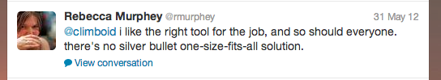
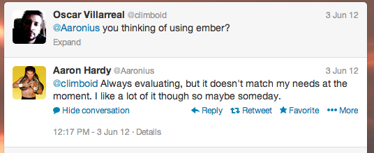

Yeoman, AngularJS and D3.js
Solid stack for web apps
Created by
Structure of the course
- Intros
- Dive into Yeoman
- Dive into Angular
- Dive into D3.js
- Projects throughout all points
Intros
Oscar Villarreal
- UI Lead
- JS Generalist
- AngularJS
- CSS
- d3JS
- Rock climb
- oscarvillareal.com
- @climboid
Suman Paul
- UI Lead
- JS Generalist
- AngularJS
- Grunt
- Yeoman
- CSS
Mexico and India

We are very similar in many ways, especially when it comes to working hard and being passionate about our teams
We need to be more productive
The tools of today allow us to do so, we simply need to use them correctly.
How do we achieve a higher level of productivity?
The secret sauce is in using the right tools
Using the right tools also means that we have the power to do things better and more organized with richer interactions
Start with your workflow

- "A collection of tools and best practices working in harmony to make developing for the web even better"
- Allows you to quickly assemble files and folders along with boilerplate code.
- Uses grunt for all of its tasks
- Uses Bower for all of the project dependencies
- Via the use of generators one can scaffold projects very quickly

Grunt
Takes care of minification, compilation (sass, coffeescript), unit testing etc
Automation

Bower
A package manager for the web, mainly front end packaging management.
Generator
A way to instantiate convention over configuration
Boilerplate code
Who contributes to Yeoman?
Addy Osmani some of the best in the world
How does Yeoman work
Live example
Questions?
Lets install Yeoman
- You will need NodeJS
- Make sure you have git installed as well
- If you use SASS you will need ruby and compass
- Use this link for windows installs (courtesy of Suman Paul)
npm install -g yo npm install -g generator-webapp npm install -g generator-angular
Lets create repos with Yeoman
Live example
Time boxed 5-10 mins?
What is an MVC framework
A pattern for your code that separates interaction and view
- Where does it come from? (smalltalk)
- How has it evolved in the front end
- DOJO Toolkit
- JavaScript MVC
- Backbone.js - Jeremy Ashkenas
- Spine.js
- Knockout.js MVVM
- Ember.js - Yehuda Katz & Tom Dale
- AngularJS - Misko Hevery

Why choose Angular?
No silver bullet
Who contributes to Angular?
- Misko Hevery
- Igor Minar
- Vojta Jina
- Matias Niemela
- Brian Ford
The key in angular is always think about the data, not the DOM, the DOM will take care of its self so long as it is data binded with a given $scope of a given controller
Core concepts of angular
- the ng...
- ng-app="App"
- ng-view
<!doctype html>
<html>
<head>
<meta charset="utf-8"/>
</head>
<body ng-app="App">
<div class="container" ng-view></div>
<script src="components/angular/angular.js"></script>
<script src="scripts/app.js"></script>
<script src="scripts/controllers/main.js"></script>
</body>
</html>
Core concpets of angular
Your main app module
'use strict';
angular.module('App', [])
.config(function ($routeProvider) {
$routeProvider
.when('/', {
templateUrl: 'views/main.html',
controller: 'MainCtrl'
})
.otherwise({
redirectTo: '/'
});
});
Core concepts of angular
Router
A router allows you to glue a controller to a view, creates a scope underneath that controller and maintains state within the app.
$routeProvider
.when('/', {
templateUrl: 'views/main.html',
controller: 'MainCtrl'
})
.when('/directory', {
templateUrl: 'views/directory.html',
controller: 'DirectoryCtrl'
})
.otherwise({
redirectTo: '/'
});
Core concepts of angular
Controller
Instantiation of a new controller object along with its child scope
'use strict';
angular.module('App')
.controller('MainCtrl', function ($scope) {
$scope.awesomeThings = [
'HTML5 Boilerplate',
'AngularJS',
'Karma'
];
});
Core concepts of angular
View
ng-view
Templates that interpolate scope objects that are part of a given controller or are inherited prototypically.
'Allo, 'Allo!
You now have
- {{thing}}
installed.
Enjoy coding! - Yeoman
Core concepts of angular
$scope
Keeps your logic contained to that controller unless you are using $rootScope
$scope will allow you to interpolate its properties in a given view
$scope.hello = "world"
...
{{hello}}...
What gets rendered in the ... ?
Core concepts of angular
$scope
angular.module('App') .controller('MainCtrl', function ($scope) { $scope.hello = [ { title:'me',color:'blue',value:2 }, { title:'you',color:'red',value:0 } ]; $scope.btnClicked = function(){ ... }; $scope.falsy = false; });<ul ng-if="!falsy"> <li ng-repeat="item in hello" ng-click="btnClicked()"> <div ng-bind="item.title"></div> <div>{{item.color}}</div> <input type="number" ng-model="item.value"/> </li> </ul>
Questions?
Core concepts of angular
Services
Something that spans multiple controllers and doesn't have a view tied to it.
'use strict';
angular.module('App')
.service('Welcoming', function Calculations() {
return{
sayHello: function(){ return 'hello' },
sayGoodbye: function(){ return 'goodbye' }
}
});
Core concepts of angular
Constants
Maintained across the entire application. Can be injected as a service. Use this for constants within your application.
'use strict';
angular.module('App')
.constant('Pi', 3.141516);
Core concepts of angular
Custom Directives
UI components, charts, visualization... anything that has specific html conversion and needs to be part of the given scope.
'use strict';
angular.module('App')
.directive('chart', function () {
return {
restrict: 'E',
controller: function($scope, $element){ ... },
templateUrl: 'my-dialog.html',
link: function (scope, element) {
scope.name = 'Jeff';
}
};
});
Questions?
Lets make an Angular app
If you have Yeoman installed follow the presenter
If you do not have Yeoman installed please clone this repo
Break 5-10 mins?
Recap
- Workflow
- Yeoman
- Generators
- Scaffolds
- MVC
- Ember
- Angular
What is the canvas?
- <canvas> "magic" </canvas>
- Used to draw graphics, on the fly, via scripting (usually JavaScript)
- Upon clicking you need to find X and Y and compare to elements inside of canvas
- Can be super charged for webGL (context 3d)
- If you need a lot of things in your visualization use Canvas for it will not kill the DOM
- Raster
Third party libraries for Canvas
- Kinetic JS
- Fabric JS
- three JS
What is SVG?
- Scalable Vector Graphics, vector image format for 2 dimensional graphics
- It is part of the DOM, can be styled using css
- Because its part of the DOM one can attach events to it via JavaScript
- Vectors can be scaled and because of that they will look beautifully on retina displays
- Ability to use images as SVG format and even fonts
Third party libraries for SVG
Why choose D3.js
- Full power and control over every single vector drawn
- Extremely easy to data bind
- Extremely easy to bind events
- Its vectors so its works beautifully on all displays
- Huge support from community
wuhu!
Who's behind D3.js
- Mike Bostock
- Jason Davies
- many others
"I suggest keeping an eye on the work of Bret Victor and Mike Bostock. Both are cutting edge. Bret Victor visualises programming, sees and thinks beautifully, just starting to blossom (see worrydream.com). Mike Bostock (see bost.ocks.org) developed the open-source D3, Data-Driven Documents (d3js.org)."Edward Tufte
Structure of a D3 visualization
- Include the library
- svg container <svg> "magic" <svg>
- Create your scales using the right domain and range
- Some boiler plate for your svg container
- Create SVG items
- Data bind the SVG item attributes
- Enter, update, exit
Mike Bostocks recommendations
For reusable chartsD3.js code example
link to codeQuestions?
Things to know about when using D3
- SVG (elements & attributes)
- Scales (linear, log, exp, ordinal, ... )
- Utility functions (max, min, extent, ...)
- Boilerplate process
Lets create our own
Some maps maybe?
Code for maps
var width = 960,
height = 500;
var projection = d3.geo.albersUsa()
.scale(1000)
.translate([width / 2, height / 2]);
var path = d3.geo.path()
.projection(projection);
var mapContainer = d3.select("#usaMap").append("svg")
.attr("width", width)
.attr("height", height);
d3.json("/data/output.json", function(error, us) {
mapContainer.insert("path", ".graticule")
.datum(topojson.feature(us, us.objects.roads))
.attr("class", "land")
.attr("d", path);
});
Break 5-10 mins?
Lets create our final repo!
Create an angular application using Yeoman
That app should have two routes, main and aboutUs, create them using the generator
Include d3 using bower
Insert the d3 code into a directive
Insert the directive into the aboutUs route
Create a directory called finalApp anywhere you want
mkdir finalApp
cd finalApp
Create an angular application using Yeoman
yo angular
Include D3 with bower
bower install d3
// include file in index.html
Create 2 routes
yo angular:route contactUs
yo angular:route aboutUs
If you don't have yeoman
use this for the routes
//
// create the routes
//
// app.js
$routeProvider
.when('/', {
templateUrl: 'views/main.html',
controller: 'MainCtrl'
})
.when('/contactUs', {
templateUrl: 'views/contactUs.html',
controller: 'ContactUsCtrl'
})
.when('/aboutUs', {
templateUrl: 'views/aboutUs.html',
controller: 'AboutUsCtrl'
})
.otherwise({
redirectTo: '/'
});
//
// crete the controllers
//
// scripts/controllers/main.js
'use strict';
angular.module('finalApp')
.controller('ContactUsCtrl', function ($scope) { });
//scripts/controllers/aboutus.js
'use strict';
angular.module('finalApp')
.controller('AboutUsCtrl', function ($scope) { });
//
// create the view files
//
// views/contactus.html
// views/aboutus.html
Create a chart directive
yo angular:directive chart
If you don't have Yeoman
use this for the directive
// scripts/directives/chart.js
'use strict';
angular.module('finalApp')
.directive('chart', function () {
return {
restrict: 'E',
link: function (scope, element) {
}
};
});
Insert the directive into the aboutUs
//aboutUs.html
Insert the d3 code we made into the directive
'use strict';
angular.module('finalApp')
.directive('chart', function () {
return {
restrict: 'E',
link: function (scope, element) {
//
// code goes here
//
// into what DOM node should we insert the directive?
}
};
});